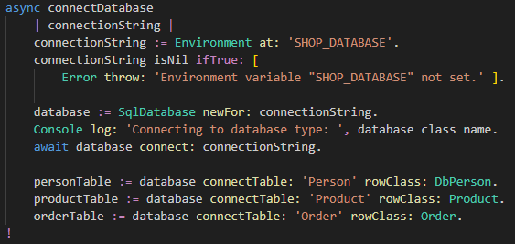

In VSCode, Open file
src/ShopServer.st and find the method
async connectDatabase .
It should look like this:

Note that the method is
async .
Most methods that wait for a network or disk response,
are be async in JS, and therefore also in SmallJS.
To still get a sync program flow, you can
await calls to async methods.
An (unfortunate) JS restriction is that functions using
await must themselves also be
async .
First the database connection string
SHOP_DATABASE is read from the environment.
Then a new database instance is created for that string.
Note that a database-specific instance is returned, depending on the connection string.
In our case the returned object will be a
SqliteDatabase, a subclass of
SqlDatabase .
Then the database is connected to, using the connection string.
Then the tables Person, Product and Orders are connected to within our database.
These will have class
SqliteTable, a subclass of
SqlTable.
Since only common functionality of
SqlDatabase and
SqlTable subclasses is used,
the app is database independent and also works on Postgres, MariaDB and MySQL.